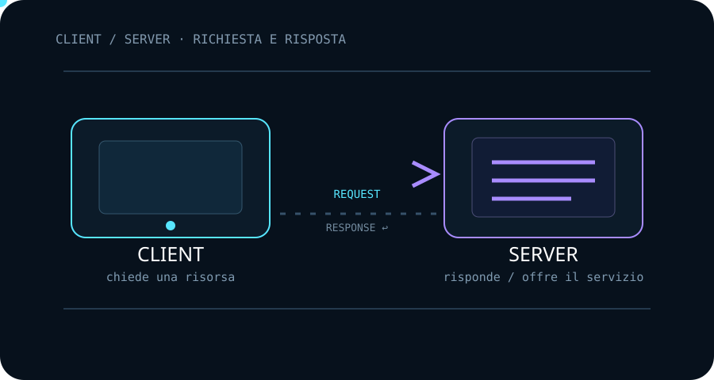
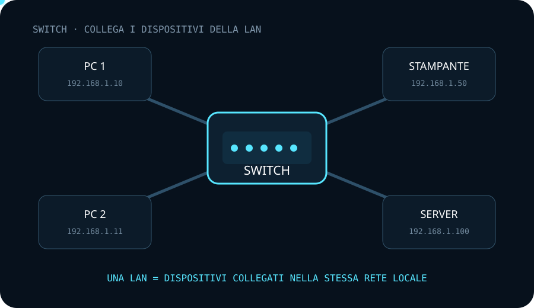
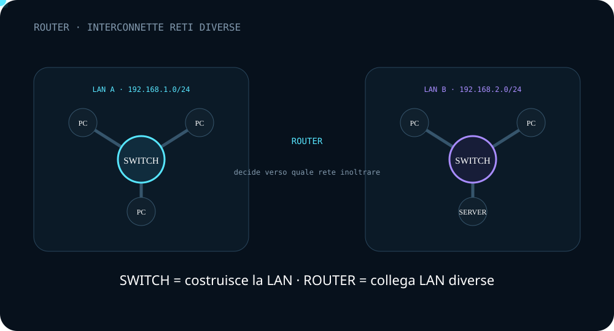

Client e Server
Il client avvia una richiesta; il server mette a disposizione una risorsa o un servizio e risponde.
Client, server, switch e router sono quattro ruoli fondamentali. Capirli permette di interpretare ciò che vedremo in Wireshark.
Una comunicazione non è solo “un computer che parla con un altro”: ci sono dispositivi che chiedono, offrono, collegano e instradano.
Il client è il dispositivo o programma che avvia una richiesta. Un browser che richiede una pagina web è un esempio.

Il server mette a disposizione un servizio e risponde alle richieste ricevute.
“Server” descrive un ruolo: lo stesso computer può essere client in una comunicazione e server in un'altra.
Lo switch collega dispositivi della stessa rete locale e inoltra i frame verso la porta appropriata.
Idea chiave: lo switch fa comunicare tra loro i dispositivi che appartengono alla stessa LAN.

Il router collega reti differenti e decide dove inoltrare i pacchetti IP.
Idea chiave: se la destinazione non appartiene alla rete locale, il traffico può essere inviato verso il router/default gateway.

La rete diventa più semplice quando distinguiamo chi utilizza un servizio, chi lo offre e quali apparati collegano i dispositivi.
Il client avvia una richiesta; il server mette a disposizione una risorsa o un servizio e risponde.
Lo switch collega più dispositivi della stessa rete locale e inoltra i frame verso la porta appropriata.
Quando la destinazione appartiene a un'altra rete, il router sceglie il percorso e inoltra i pacchetti verso la rete successiva.
Seleziona una risposta per vedere la spiegazione.